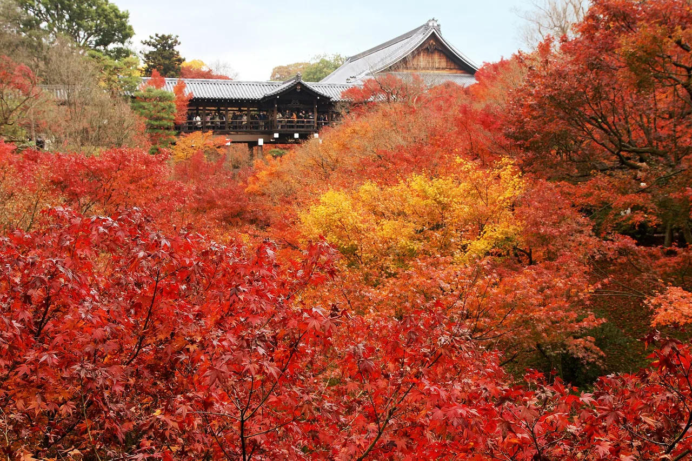
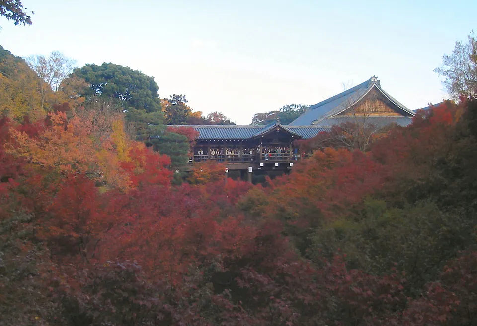
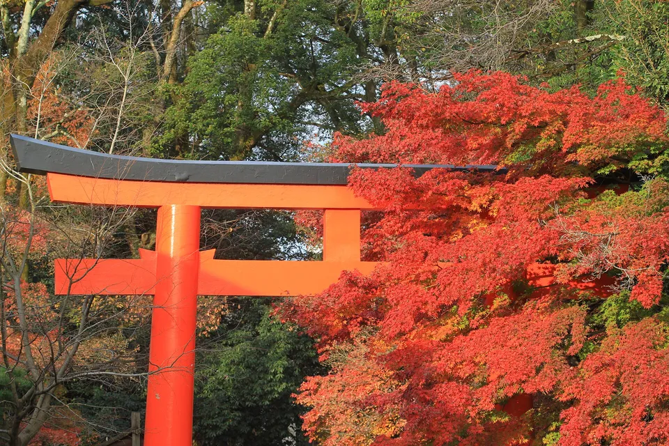
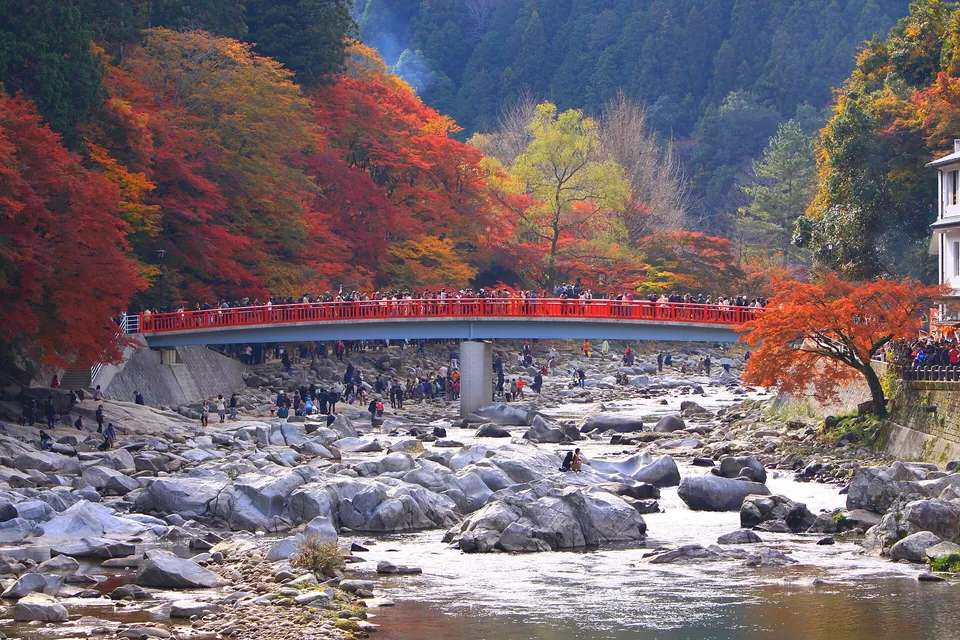
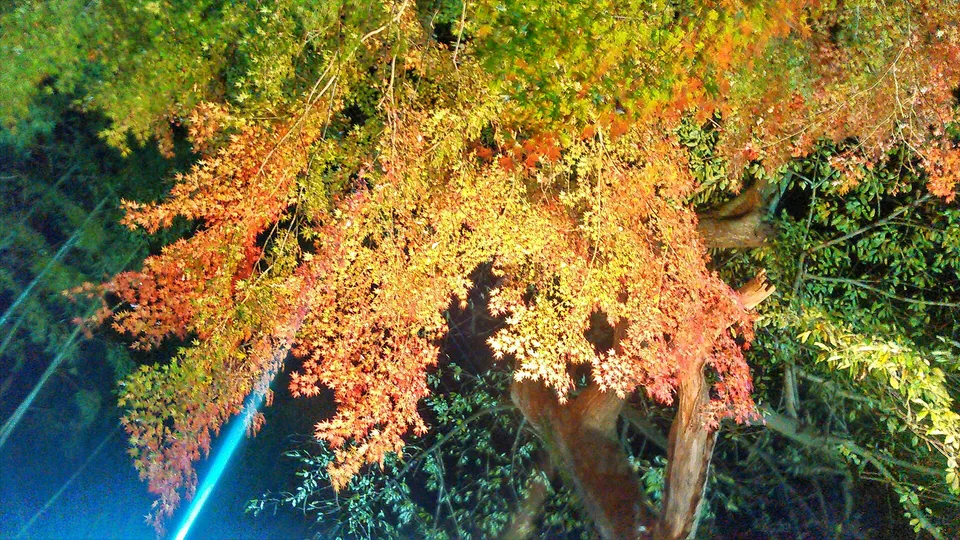

Autumn goshuin: what changes in maple season
Autumn is when Japan's temples issue their best goshuin (御朱印) — maple-leaf seals, limited papers, designs that exist for six weeks and never return. It is also, awkwardly, when many of those same temples stop writing goshuin into your book at all and hand out pre-printed sheets instead, because the queue is three hundred people long. This guide covers when the leaves actually turn, which 2026 dates are already published, where the limited autumn stamps are worth planning around, and how to avoid arriving with an empty stamp book and no way to fill it.

When the leaves actually turn
Most English itineraries put "Japan autumn leaves" in early November and get it wrong at both ends of the country. The Japan Meteorological Agency observes a standard maple at each city station and records the day it colours. Here is what it recorded in 2025.


Photos: Tsūten-kyō bridge at Tōfuku-ji, Kyoto, in autumn colour — ＋－, CC BY-SA 3.0, via Wikimedia Commons · Autumn at Shimogamo Shrine's west approach, Kyoto — pcs34560, Public domain, via Wikimedia Commons
| City | 2025 maple colouring day | vs. the long-term normal |
|---|---|---|
| Sapporo | 6 November | 9 days later than normal |
| Sendai | 20 November | 1 day earlier |
| Tokyo | 23 November | 5 days earlier |
| Nagoya | 25 November | 3 days earlier |
| Fukuoka | 1 December | on the normal |
| Kyoto | 10 December | 5 days later |
Two things follow. First, Kyoto is not a November destination for leaves — its normal is early December, and in 2025 the standard tree did not colour until the tenth. Second, these are city-centre stations at low elevation, so they run later than the mountains tourists actually photograph.
If you are travelling in October, go up. Nikkō's official tourism body puts Lake Yunoko and Ryūzu Falls at "around mid-October in a normal year", the Irohazaka switchbacks peaking from late October and moving gradually downhill, and the World Heritage shrine precinct — where Rinnō-ji issues its cut-paper goshuin — colouring from mid-October through to mid-November. That is a same-day trip from Tokyo, six weeks before Kyoto is ready.
The rule change nobody warns you about
A goshuin is normally brushed into your goshuinchō while you wait. In peak autumn, at the temples everyone visits, that stops. The temple posts a notice, switches to kakioki (書き置き) — pre-written sheets handed over loose — and does not touch your book at all until the season ends.
This is not a rumour; the temples publish it themselves. Tōfuku-ji in Kyoto, whose Tsūten-kyō bridge is the single most photographed maple view in the country, has issued exactly this notice repeatedly: in 2023 it announced that from 28 October to 10 December it would issue pre-written sheets only, and that direct writing into stamp books was suspended for the autumn. In earlier years it ran the same policy on slightly different dates.
Hōtoku-ji in Gunma does it by the month: its autumn seasonal goshuin runs 1 September to 30 November, and the temple states that November is pre-written only. Eikan-dō in Kyoto goes further and warns that during major services, Golden Week and the autumn treasures exhibition it may not be able to meet goshuin requests at all.
If your goal is a brush-written page from a famous Kyoto temple, autumn is the worst time of year to try. Either go in a shoulder month, or go to smaller temples away from the photographed views, or accept sheets and bring a clear-pocket album to hold them. Turning up on 25 November at Tōfuku-ji with an empty book and an expectation of calligraphy is the classic mistake.
2026 dates already published
Most temples announce autumn plans in September or October. Two significant ones have already published 2026 dates, which makes them the only ones you can plan around this far out.
| Temple | 2026 autumn dates | Hours & admission | Goshuin situation |
|---|---|---|---|
| Hōtoku-ji宝徳寺 — Kiryū, Gunma | Floor-reflection maple viewing 17 Oct – 30 Nov; evening light-up 14 Nov – 30 Nov | Daytime reception 9:00–16:00 (gates 16:30), ¥800 in October and ¥1,200 in November, free for high-school age and under. Light-up reception 17:00–19:00 (gates 19:30), ¥1,200 | Autumn seasonal design 1 Sep – 30 Nov. November is pre-written sheets only. Goshuin counter 9:00–16:00 |
| Eikan-dō Zenrin-ji永観堂禅林寺 — Kyoto | Autumn treasures exhibition 11 Nov – 6 Dec; light-up 20 Nov – 6 Dec | Standard admission ¥1,000 general, ¥600 middle and high school, ¥200 primary. Daytime and evening are separate admissions — you cannot stay through from one to the other | The temple states it may be unable to fulfil goshuin requests during the autumn exhibition |
Hōtoku-ji is worth the detour for a reason unrelated to stamps: its yuka-momiji, where the polished floor of the main hall mirrors the garden so completely that photographs of it look inverted. The temple bans tripods and monopods during the season because of the conflicts they caused, so plan on hand-held shots.
Eikan-dō closes its grounds to private cars and tour buses during both the exhibition and the light-up. Come on foot from Keage or by bus.
The clearest autumn-limited goshuin in Japan
Most temples that issue an autumn goshuin publish no price for it, which makes them hard to plan around. Kōjaku-ji (香積寺), the temple at the head of the Kōrankei gorge in Toyota, Aichi, is the exception — it publishes the whole list.

- Standard goshuin — Shō-Kannon, Kōrankei, Bishamonten — ¥500 each
- Large-format versions — ¥1,000
- November only: issued on Obara premium handmade washi — ¥1,000
- Temple stamp books in red maple, green maple or logo design — ¥2,500
The counter runs 9:00–16:00 normally. During the November maple festival it extends to 17:00 on weekdays and 21:00 at weekends, which is unusual — most goshuin counters shut long before the light-up starts, so this is one of the few places you can photograph illuminated maples and still collect afterwards. Toyota City's own tourism page puts the Kōrankei momiji festival at "1 November for about a month", with roughly 4,000 maples and a light-up at peak colour. The temple grounds themselves are free.
For anyone visiting Aichi in autumn 2026 — and there will be a lot of people, since the Asian Games are in Nagoya from 19 September to 4 October — Kōrankei is about an hour from the city and peaks just after the Games close.
Photography, tripods and access
Autumn rules are stricter than the rest of the year, and they are posted in Japanese where visitors do not read them. The consistent pattern across the temples checked for this guide:

Tripods and monopods are commonly banned outright during the season — Hōtoku-ji and Eikan-dō both state it. Indoor photography of cultural property is prohibited at Eikan-dō, as are selfie sticks inside halls. Staged photo shoots are refused: Yōkoku-ji, the maple temple in Nagaokakyō south-west of Kyoto, asks visitors not to bring models or photographers for shoots, and requires appropriate dress if photographing people at all.
Yōkoku-ji is also a good illustration of how tight the autumn timetable gets. In 2025 its momiji week ran 15 November to 7 December, with the grounds open 9:00–17:00 but goshuin reception closing at 16:30. Half an hour is easy to lose in a queue. Collect first, wander second.
If this is your first time collecting, read what goshuin are and the etiquette → and how to choose a stamp book →. Autumn's most collectable format is the cut-paper sheet — see kirie goshuin →. Castles issue their own paid version, the gojōin →. After the maples come the winter markets: November's rake markets → and, in the first week of January, the Seven Lucky Gods stamp routes →.
The Japanese you'll actually use
These are the words on the autumn notice boards — the ones that tell you whether your book is going to be written in or not.
| Japanese | Reading | Meaning |
|---|---|---|
| 紅葉 | kōyō / momiji | autumn leaves; momiji also means the maple itself |
| 見頃 | migoro | peak viewing time |
| 期間限定 | kikan gentei | limited to a period — the autumn design |
| 書き置きのみ | kakioki nomi | "pre-written sheets only" — your book will not be written in |
| 直書き中止 | jikagaki chūshi | "direct writing suspended" |
| ライトアップ | raito appu | evening illumination |
| 入替制 | irekae-sei | separate admissions — you must leave and re-enter |
| 三脚禁止 | sankyaku kinshi | tripods prohibited |
| 受付終了 | uketsuke shūryō | counter closed / reception ended |
| 拝観料 | haikanryō | admission fee for temple grounds |
Want these to stick? The free JLPT battle quiz drills travel and culture vocabulary like this with spaced repetition.
Common questions
Q. When do Japan's autumn leaves actually peak?
A. Later than most guides say, and it varies by two months across the country. In 2025 the Japan Meteorological Agency recorded its standard maple colouring on 6 November in Sapporo, 23 November in Tokyo and 10 December in Kyoto. Highland areas such as Nikkō's Lake Yunoko peak in mid-October, weeks earlier than any city.
Q. Will temples write a goshuin in my book during autumn?
A. Often not. Major temples switch to pre-written sheets in peak season — Tōfuku-ji in Kyoto has announced pre-written-only periods running from late October to mid-December, and Hōtoku-ji in Gunma states that November is sheets only. Eikan-dō warns it may not be able to meet goshuin requests during the autumn exhibition at all.
Q. What is an autumn limited goshuin?
A. A design issued only for the maple season, often on special paper. Kōjaku-ji at Kōrankei issues one on Obara handmade washi in November only, for ¥1,000, against ¥500 for its standard designs.
Q. Which 2026 autumn dates are already confirmed?
A. Hōtoku-ji in Kiryū, Gunma has published floor-reflection maple viewing from 17 October to 30 November with a light-up from 14 to 30 November. Eikan-dō in Kyoto has published its autumn treasures exhibition for 11 November to 6 December with a light-up from 20 November. Most other temples announce in September or October.
Q. Can I collect a goshuin during an evening light-up?
A. Usually no — counters close in the late afternoon even when the grounds reopen at night. Kōjaku-ji at Kōrankei is a rare exception, extending its counter to 21:00 at weekends during the November festival.
Q. Are tripods allowed at maple temples?
A. Frequently banned during the season. Hōtoku-ji prohibits tripods and monopods outright for the viewing period, and Eikan-dō bans them anywhere on its grounds along with indoor photography of cultural property.
Q. Is Kyoto the best place for autumn goshuin?
A. It has the most famous temples, but also the worst queues and the strictest seasonal restrictions, and its leaves turn last. If your priority is collecting rather than photographing, smaller temples and October highland destinations give you a far better chance of a brush-written page.
Autumn temple visits usually end sitting down with a bowl of matcha. Our matcha and tea ceremony set comparison → compares five whisk and utensil sets, including which ones actually work as gifts.